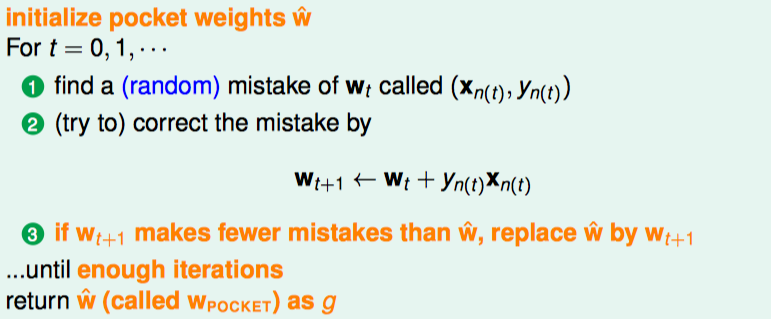
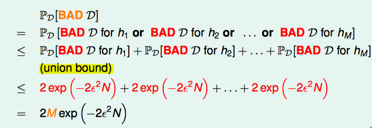

CS190: Scalable Machine Learning
see Labs here
Distributing Computing
Need more hardware to store/process modern data
Scale-up(one big machine)
- Can be very fast for medium scale problems
- Expensive, specialized hardware
- Eventually hit a wall
Scale-out (many small machine, i.e., distributed)
- Commodity hardware, scales to massive problems
- Need to deal with network communication
- Added software complexity
Apache Spark is a general, open-source cluster computing engine.
Well-suited for machine learning
- Fast iterative computations
- Efficient communication primitives
- Simple and expressive: APIs in Scala, Java, Python, R
- Integrated higher-level libraries (
MLlib, Spark SQL, Spark Streaming, GraphX)
Typical Supervised Learning Pipeline
- Obtain Raw Data
- Feature Extraction
- Supervised Learning
- Evaluation
- Predict

TensorFlow(5): Vector and Matrix Product in Numpy and TensorFlow
Numpy
Following are common vector and matrix product operations in Numpy, they are quite simple and straightforward:
Inner Product \(\quad a^Tb\quad \):
np.inner(a,b)Outer Product \(\quad ab^T\quad \):
np.outer(a,b)Dot Product \(\quad a \cdot b = \sum a_ib_i\quad \):
np.dot(a,b)Elementwise Product \(\quad c_i = a_ib_i\quad \):
np.multiply()orc=a*b
Note: inner product is defined on vector spaces over a field ùïÇ (finite or infinite dimensional). Dot product refers specifically to the product of vectors in \(‚Ñù^n\)
The difference between the following implementations of the dot/inner/outer/elementwise product are demonstrated as follows:
import numpy as np
W = np.ones((2, 7), dtype='float32')
x1 = np.array([9, 2, 5, 0, 0, 7, 5])
x2 = np.array([9, 2, 2, 9, 0, 9, 2])
print('vector dot product', np.dot(x1,x2)) # dot product
print('inner', np.inner(x1,x2)) # inner product
print('outter', np.outer(x1,x2)) # outter product
print('element-wsie', np.multiply(x1,x2)) # Element-wise product
print('element-wsie', x1*x2) # Element-wise product
print('matrix dot product', np.dot(W, x1)) # dot product
vector dot product 168
inner 168
outter [[81 18 18 81 0 81 18]
[18 4 4 18 0 18 4]
[45 10 10 45 0 45 10]
[ 0 0 0 0 0 0 0]
[ 0 0 0 0 0 0 0]
[63 14 14 63 0 63 14]
[45 10 10 45 0 45 10]]
element-wsie [81 4 10 0 0 63 10]
element-wsie [81 4 10 0 0 63 10]
matrix dot product [ 28. 28.]
For detailed explanation, see here;
TensorFlow
Vector inner/outer Product are a bit complex in TensorFlow.
import tensorflow as tf
import numpy as np
x = tf.Variable([[1, -2, 3]], tf.float32, name='x')
y = tf.Variable([[-1, 2, -3]], tf.float32, name='y')
## inner product
inner_product1 = tf.reduce_sum(tf.multiply(x, y))
inner_product2 = tf.matmul(x, y, transpose_a=False, transpose_b= True) # different from inner_product1
## outer product
outer_product2 = tf.matmul(x, y, transpose_a= True)
## matrix dot product
X = tf.constant(np.random.randn(3,3), name='X')
W = tf.constant(np.random.randn(3,3), name='W')
matrix_product = tf.matmul(W, X)
sess = tf.InteractiveSession()
init_op = tf.global_variables_initializer()
# run
sess.run(init_op)
print(sess.run(inner_product1))
print(sess.run(inner_product2))
print(sess.run(outer_product2))
print(sess.run(matrix_product))
-14
[[-14]]
[[-1 2 -3]
[ 2 -4 6]
[-3 6 -9]]
[[-0.88722509 -0.94128018 -2.1999658 ]
[-0.67967623 1.33193446 -0.75612585]
[ 0.31741623 1.3271727 -0.04311113]]
Machine Learning Foundations - Mathematical Foundations
- (1) The Learning Problem
- (2) Learning to answer Yes or No
- (3) Types of Learning
- (4) Feasibility of Learning
- (5) Training versus Testing
- (6) Theory of generalization
- (7) VC dimension
- (8): Noise and error
The course, Machine Learning Foundations - Mathematical Foundations(机器学习基石), is taught by Hsuan-Tien Lin on Coursera (course info page).
As the name of the course indicates, the course teaches the most fundamental algorithmic, theoretical, mathematical background of machine learning.
The article summaries the key concepts and conclusions in the course. Each section in the article corresponding to one chapter in the course.
(1) The Learning Problem
Key Essence of Machine Learning
Machine Learning: improving some performance measure with experience computed from data
- exists some 'underlying pattern' to be learned — so 'performance measure' can be improved
- but no programmable (easy) definition — so 'ML' is needed
- somehow there is data about the pattern — so ML has some 'inputs' to learn from
Formalize the Learning Problem
Basic Notations:
- input: \(x\in\mathcal{X}\)
- output: \(y\in\mathcal{Y}\)
- unknown pattern to be learned \(\Leftrightarrow\) target function:
\(f:\mathcal{X}\rightarrow\mathcal{Y}\) - data \(\Leftrightarrow\) training examples: \(\mathcal{D}={(x_1,y_1),(x_2,y_2),...,(x_N,y_N)}\)
- hypothesis \(\Leftrightarrow\) skill with hopefully good performance: \(g: \mathcal{X}\rightarrow \mathcal{Y}\)
- final hypothesis: \(\mathcal{g}\approx f\)
Machine Learning: use data \(\mathcal{D}\) to compute hypothesis \(g\) that approximates target \(f\).

Machine Learning and other Fields
- Machine Learning: use data to compute hypothesis \(g\) that approximates target \(f\)
- Data Mining: Use (huge) data to find property that is interesting
\(\Longleftrightarrow\)If 'interesting property' same as 'hypothesis that approximate target', Machine Learning = Data Mining
\(\Longleftrightarrow\) If 'interesting property' related to 'hypothesis that approximate target', data mining can help machine learning.
\(\Longleftrightarrow\) traditional data mining also focuses on efficient computation in large database.
(2) Learning to answer Yes or No
Perceptron Hypothesis Set
Vector Form of Perceptron Hypothesis:
\[h(x) = \text{sign}(\sum\limits_{i=0}^dw_ix_i)=\text{sign}(W^Tx)\]
Perceptron Learning Algorithm(PLA):

Pocket Algorithm: modify PLA algorithm by keeping best weights in pocket

(3) Types of Learning
Learning with Different Output Space
- binary classification: \(\mathcal{Y}=\{-1,+1\}\)
- multiclass classification: \(\mathcal{Y}=\{1, 2,..., K\}\)
- regression: \(\mathcal {Y} =\mathbb{R}\)
- structured learning: \(\mathcal{Y}=\) structures
Learning with Different Data Label
- supervised: all \(y_n\)
- unsupervised: no \(y_n\)
- semi-supervised: some \(y_n\)
- reinforcement: implicit \(y_n\) by goodness (\(\hat y_n\))
Learning with Different Protocol
Protocol \(\Longleftrightarrow\) Learning Philosophy.
- batch: all known data
- online: sequential (passive) data
- active: strategically-observed data
Learning with Different Input Space
- concrete: sophisticated (and related) physical meaning e.g. user features(age, sex, education level)
- raw: simple physical meaning e.g. image features
- abstract: no (or little) physical meaning e.g. user/image IDs
(4) Feasibility of Learning
Learning outside training examples
No Free Lunch: Learning from \(D\) (\(D\): training examples) (to infer something outside \(D\)) is doomed to fail if any unknown \(f\) can happen.
- \(g\approx f\) inside \(D\): Possible!
- \(g\approx f\) outside \(D\): Impossible!
In and out of sample error
For any fixed \(h\), in 'big' data (N large), in-sample error \(E_{in}(h)\) is probably close to out-of-sample error \(E_{out}(h)\) (within \(\epsilon\)):
\(P(|E_{in}(h)-E_{out}(h)|> \epsilon) \le 2\exp(-2\epsilon^2N)\)
The equation above is called Hoeffding's Inequality. The statement \(E_{in}(h)=E_{out}(h)\) is probably approximately correct (PAC, 大概近似正确).
If large \(N\), we can probably infer unknown \(E_{out}(h)\) by known \(E_{in}(h)\).
in-sample error \(E_{in}(h)\) denotes orange fraction in sample, out-of-sample error \(E_{out}(h)\) denotes orange probability in bin, When we want to infer the orange probability in bin.


Connection to Real Learning
Bad data for One \(h\):
\(E_{out}(h)\) and \(E_{in}(h)\) far away: e.g. \(E_{out}\) big (far from \(f\)), but \(E_{in}\) small (correct on most examples).
Bad data for many \(h\):
\(\Leftrightarrow\) no 'freedom of choices' by learning algorithm \(\mathcal{A}\)
\(\Leftrightarrow\) there exists some \(h\) such that \(E_{out}(h)\) and \(E_{in}(h)\) far away
Bound of BAD data
Form \(M\) hypotheses, what is the bound of \(\mathbb{P}_{\mathcal{D}} [\text{BAD} \; \mathcal{D}]\)

The union bound WIKI (布尔不等式), also known as Boole's inequality, says that for any finite or countable set of events, the probability that at least one of the events happens is no greater than the sum of the probabilities of the individual events.
The Statistical Learning Flow
If \(|\mathcal{H}|=M\) finite, \(N\) large enough, for whatever \(g\) picked by \(\mathcal{A}\), \(E_{out}(g)\approx E_{in}(g)\)
if \(\mathcal{A}\) finds one \(g\) with \(E_{in}(g)\approx 0\),
PAC gaurantee for \(E_{out}(g)\approx 0\) \(\rightarrow\) learning possilbe!
(5) Training versus Testing
For batch and supervised binary classification, \(g\approx f\Longleftrightarrow E_{out}(g)\approx 0\) achieved through \(E_{out}(g)\approx E_{in}(g)\) and \(E_{in}(g)\approx 0\).
In order to achieve two conditions above, learning split to two central questions:
- Can we make sure that \(E_{out}(g)\) is close enough to \(E_{in}(g)\)?
- Can we make \(E_{in}(g)\) small enough?
In order to understand trade-off for 'right' \(\mathcal{H}\), we establish a finite quantity that replace \(M\),
\[\mathbb{P}[|E_{in}9g)-E_{out}(g)|>\epsilon] \le 2\cdot m_\mathcal{H} \cdot \exp(-2\epsilon^2 N)\]
Dichotomy
Define hypothesis set \(\mathcal{H}\):
\(\mathcal{H}=\{\text{hypothesis}\quad h: \mathcal{X}\rightarrow{\text{x,o}}\}\)
And we call hypothesis 'limited' to the eyes of \(x_1, x_2,..., x_N\) a dichotomy:
\[\mathcal{H}(x_1,x_2,...,x_N)=\{(h(x_1),h(x_2),...,h(x_N)) \quad | \quad h \in \mathcal{H} \}\]
One can think of the dichotomies \(\mathcal{H}(x_1,x_2,...,x_N)\) as a set of hypotheses just like \(\mathcal{H}\) is, except that the hypotheses are seen through the eyes of \(N\) points only.
Note: hypotheses \(\mathcal{H}\) and dichotomy \(\mathcal{H}(x_1,x_2,...,x_N)\) are different!
Growth function
Growth function is the maximum number of dichotomies that can be generated by \(\mathcal{H}\) on any \(N\) points:
\[m_\mathcal{H}(N) = \max\limits_{x_1,x_2,...,x_N\in\mathcal{X}}|\mathcal{H}(x_1,x_2,...,x_N)|\]
Growth function is finite, its upper-bound is \(2^N\).
Growth functions in different situation:
- positive rays: \(m_\mathcal{H}(N)=N+1\)
- positive intervals: \(m_\mathcal{H}(N)=\frac{1}{2}N^2+\frac{1}{2}N+1\)
- convex sets: \(m_\mathcal{H}(N)=2^N \)
- 2D perceptrons: \(m_\mathcal{H}(N)=2^N \text{in some cases}\)
Shatter and Break point
If no \(k\) inputs can be shattered by \(\mathcal{H}\) , call \(k\) a break point for \(\mathcal{H}\).
if \(m_H(K) < 2^k\), call k a break point for \(\mathcal{H}\).
- since \(k\) is a break point, \(k+1, k+2, k+3,...,\) also break points
minimum break points for different \(\mathcal{H}\):
- positive rays: k=2
- positive intervals: k=3
- convex sets: none
- 2D perceptrons: k=4
(6) Theory of generalization
Bounding Function
Bounding Function \(B(N,k)\) is maximum possible \(m_\mathcal{H}(N)\) when break point \(=k\).
\[B(N,k) \le \sum\limits_{i=0}^{k-1} \left(\stackrel N i\right)\]
For fixed \(k, B(N,k)\) upper bounded by \(ploy(N)\), \(\rightarrow m_{\mathcal{H}}(N)\) is \(poly(N)\) _if break point exists_.
VC Bound
When N large enough,
\[P[\exists h\in \mathcal{H} \quad s.t.\quad |E_{in}(h)-E_{out}(h)|> \epsilon]\le 4 m_\mathcal{H}(2N)\exp(-\frac{1}{8}\epsilon^2N)\]
The above equation called _Vapnik-Chervonenkis (VC) bound_.
(7) VC dimension
VC dimension, the formal name of maximum non-break point, denoted \(d_{VC}(\mathcal{H})\), is
\[\text{largest N for which } m_{\mathcal{H}}(N)=2^N\]
- positive rays: \(d_{VC}=1\)
- positive intervals: \(d_{VC}=2\)
- convex sets: \(d_{VC}= \infty \)
- 2D perceptrons: \(d_{VC}=3\)
- d dimension Perceptrons: \(d_{VC}=d+1\)
Interpreting VC Dimension


(8): Noise and error
Noise in \(x\) and \(y\):

NOTE: VC holds for \(x \stackrel{i.i.d}{\backsim} P(x), y \stackrel{i.i.d}{\backsim} P(y|x)\)

Error Measure
Two Important Pointwise Error Measures
0/1 error(often for classification): err(\(\tilde y,y)=[\tilde y\ne y]\)
squared error(often for regression): err(\(\tilde y,y)=(\tilde y\ne y)^2\)

Copyright © 2015 Powered by MWeb, Theme used GitHub CSS.